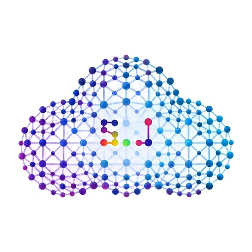

陆林然
13671473060 | 20238131017@m.scnu.edu.cn | github.com/lululinran
华南师范大学 ｜ 数据科学与大数据技术专业（本科）｜ 2023.09 – 2027.06
综合测评专业前 8% ｜ CET-6 ｜ 中国国际大学生创新大赛省级银奖、校级课外科研「金种子」立项结题、十五运会志愿服务卓越奖（119 小时+）｜ 行知书院学生体育协会会长
专业课程：数据挖掘与机器学习（89）· 数据结构（88）· Python程序设计及应用（86）· 数据科学导论（93）· 大数据分析技术（92）· 并行与分布式计算（95）· 统计学原理（99）· 数学建模（97）· Linux操作系统与应用（92）· Web开发基础（90）
实习经历
深圳乐动机器人股份有限公司· 具身智能与 AI 应用中心
Agent 应用开发实习生｜2026.06 – 2026.09
多模态家庭 AI Agent 系统（主机侧编排 + 设备端感知）
- 背景与目标：本地 AI 主机（Python / FastAPI）负责编排、记忆与语音交互，机器人端（RK3576 / C++）负责视觉感知与云台控制，经 MCP / ZeroMQ 打通并接入 Home Assistant、Frigate。约束有三：语音交互有时限要求、长任务不能因超时而失败、敏感数据不出户。
- 我的职责：负责主机侧编排与记忆链路，主导设备端感知与 MCP 化。
- 高频指令零模型调用，复杂任务才走 LLM：「确定性优先、LLM 兜底」的五层处理漏斗（定域 → 隐私闸 → 关键词路由 → LLM 分流 → 最多 8 步工具循环）；寒暄、口令等高频快路零模型调用。语音交互 3s / 长任务 15s 双预算，超时转后台继续而非报错，交互时限与任务时限解耦。
- 防提示注入：记忆、检索结果只当资料、不当指令。记忆、RAG、工具结果一律以「数据而非指令」身份注入，并附加人格不变量约束；50+ 工具候选经 bge-m3 语义检索收敛至 ≤9 个；记忆按类型设差异化半衰期（身份类永不衰减、设备操作类 7 天遗忘）；LLM 抽取结果以 0.45 低信任分入库而非直接采信；RAG 采用混合检索 + RRF 融合，低置信时固定拒答。
- 默认不信任、审计先行、默认拒绝（fail-closed）：Home Assistant、Frigate 及自研设备全部工具化（聚合 11+ server schema），技能以 SKILL.md 声明式热加载；隐私双闸 + 出网脱敏，防 SSRF，危险操作二次确认。
- 在不可靠总线上做出可靠调用：设备端（C++）实现 MCP-over-WebSocket 服务端，把云台跟踪封装为「请求 → 回执 + 3s 超时」的可靠工具契约，断连自动停止跟踪；手写 Kalman 滤波，栈上定长矩阵、高频路径零堆分配。

深圳市深津云科技有限公司 Agent 全栈交付实习生｜2025.12 – 2026.03Agent 驱动的全栈交付工作流（五站流水线设计与搭建）
- 背景：to B 小程序定制业务初期依赖手工 vibe-coding 与碎片化 prompt，质量与复用不稳定。
- 我的职责：设计并搭建可复用的 Agent 全栈交付工作流，并用真实商单验证闭环。
- 从碎片化 prompt 到可复用工作流：对照 Spec-Driven Development（spec-kit）与多智能体 SOP（MetaGPT），把 prompt 实践重组为「结构化 Spec → Schema → 模块装配 → 扩展点定制 → 过站验收」五站工作流；配置驱动生成（app.config.json → SQL / 数据模型 / 类型定义），支撑多场景适配。
- 真实商单跑通闭环：用该工作流交付「代客祭扫服务平台」（uni-app x + Egg.js + MySQL），产出合同级 PRD、19 张表（3NF）数据库建模、RESTful API 与 Admin 后台，npm test 32 项全部通过；订单快照不变式、订单状态机（pending_payment → … → completed / refund）与双端权限约束均由工作流生成，支付与权限路径强制人工审核。
论文与开源
MemeFuzzer ｜ ICME 2026（CCF-B）已接收 · 第三作者
- 研究内容：多模态大模型安全评测：受软件 fuzz testing 启发，以受害者视角（mindset 模拟 + Mindset Router）校准多模态大模型对有害梗图的注意力偏差，再经 Norm Alignment Network 对齐人类判断。
- 我的工作：参与前期调研与方法框架设计，搭建三数据集统一评测流水线（FHM / MAMI / ToxiCN-MM），覆盖数据准备、基线对比、消融验证全流程，跑通 10 余个 baseline 对比与三组消融实验。
- 结果：中英三数据集全面超越强基线，中文集 F1 相对提升 +5.48。
PoisonSwarm（FCGen）｜ ACL 2026（CCF-A）在投 · 第三作者 github.com/lululinran/poisonswarm_defeat
- 研究内容：LLM 安全红队研究：揭示众包式分布式有害信息生成，三阶段流水线（反事实映射 → 单元级毒化 → 有害重组）+ Launder Scheduler 跨模型调度，攻击成功率 SSR 达 1.00。
- 我的工作：参与三阶段流水线实验搭建与前期调研；独立实现攻击特征检测原型（语义解析 → 贝叶斯意图建模 → 分档熔断 → 多模型共识），做会话级意图追踪，覆盖红队攻击分析与防御检测双视角。
专业技能
- Agent Loop 与任务编排：熟悉感知–推理–工具调用–观测的 Agent 循环设计，掌握确定性优先、LLM 兜底的混合编排与多步工具循环（最多 8 步）、超时熔断与后台续跑。
- 上下文工程与记忆系统：掌握记忆与检索的上下文工程（50+ 工具候选语义收敛至 ≤9 个、记忆差异化半衰期、低信任分入库）、RAG（混合检索 + RRF 融合、低置信固定拒答）。
- MCP 工具生态：熟悉 MCP 协议与工具运行时（默认不信任、审计先行、fail-closed）、SKILL.md 声明式技能热加载、MCP-over-WebSocket 设备端工具化。
- AI 安全与对抗防御：熟悉提示注入防御（数据而非指令、隐私双闸、出网脱敏、防 SSRF、危险操作二次确认）；实现过攻击特征检测原型（语义解析 → 贝叶斯意图建模 → 分档熔断 → 多模型共识），做会话级意图追踪。
- 多模态评测与实验方法：搭建过三数据集统一评测流水线，跑通 10 余个 baseline 对比与三组消融实验；熟悉多模态大模型安全评测方法。
- 多智能体与 Spec-Driven：了解 MetaGPT 多智能体 SOP 与 spec-kit 的 Spec-Driven 方法，并用于全栈交付工作流设计。
- 视觉算法：研究过 YOLO 目标检测、自动对焦、人脸追踪，具备 OpenCV、目标跟踪、端侧 NPU 部署（RKNN）实践。
- 全栈与后端：熟悉 FastAPI、asyncio、MySQL、PostgreSQL、Qdrant 服务端开发；熟悉 uni-app x、Egg.js，掌握数据库建模、RESTful API 与权限体系设计；熟悉 Git 协作与单元测试规范。